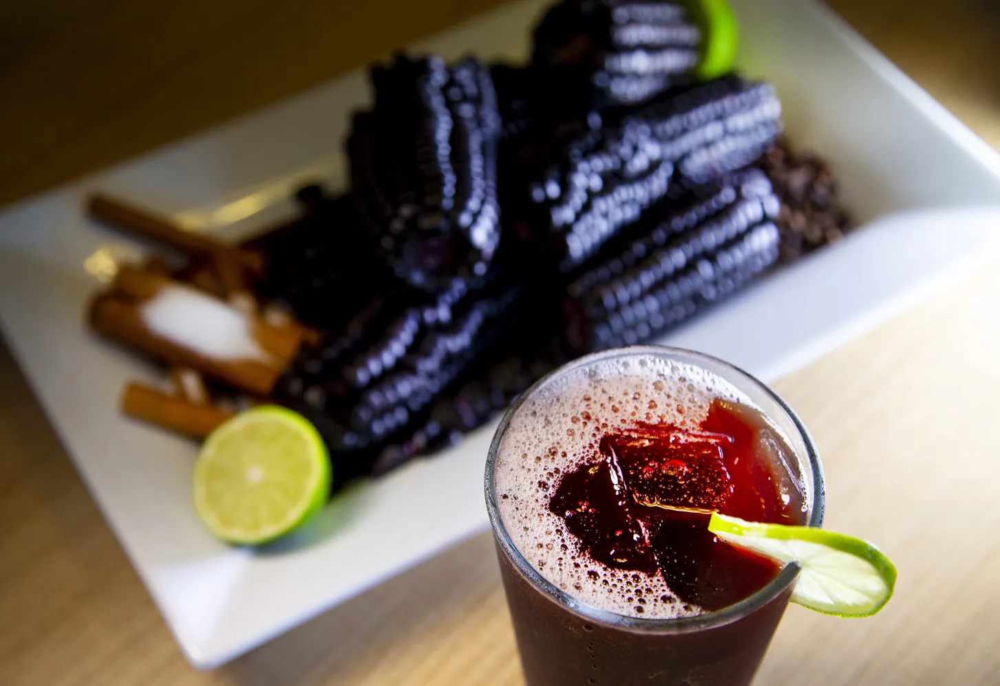

Chicha Morada

Peruvian Purple corn drink
Sweet, cool, purple fruit juice made from purple corn! Indigenous to the Inca Natives of Peru in South America, it has a yummy, refreshing flavor. It's definitely worth the time it takes to prepare it! You'll get rave reviews from friends who try it.
- 1 gallon water
- 1 (15 ounce) package dried purple corn (maiz morado)
- 2 cinnamon sticks
- 1 tablespoon whole cloves
- 5 large lemons, juiced
- 1 ½ cups brown sugar
- ½ cup fresh pineapple, chopped
- ½ apple, chopped
Steps
- Bring the water to a boil with the corn, cinnamon sticks, and cloves in a large pot. Reduce heat to medium-low; simmer 40 minutes. Remove from the heat and strain through a mesh strainer to remove the corn and spices. Stir the lemon juice and sugar into the chicha until the sugar has dissolved. Refrigerate until cold.
- Stir in the chopped pineapple and apple before serving over ice.